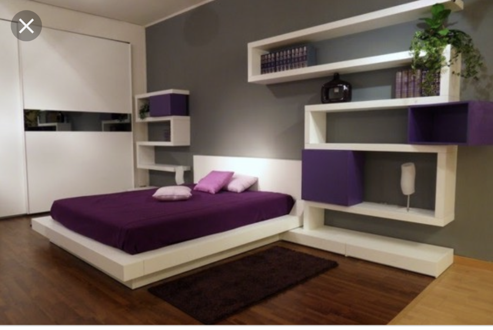
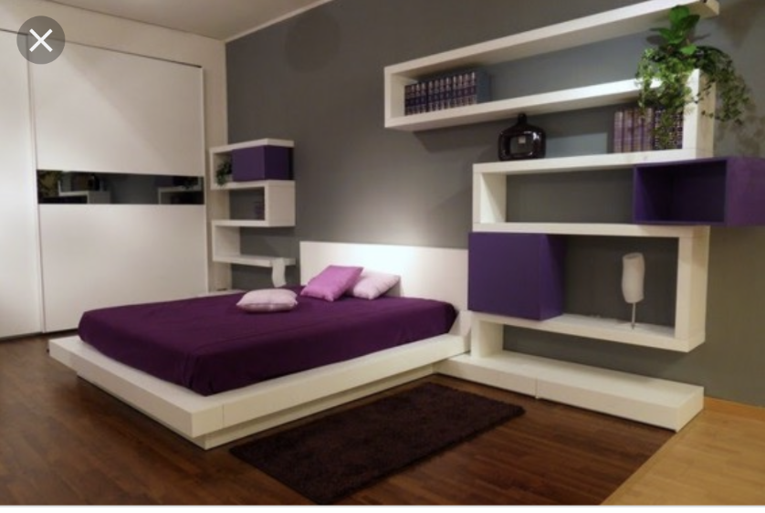

Interior Design Ideas
Ако ти дойде повече от една идея или имаш колебания за конкретни елементи, може по всяко време да питаш/ пращаш (не е нужно да са готови визуализации още отначалото) - примерно ако видиш някоя маса/ диван/бар и легло и т.н. - може да питаш дали/ кое ни допада и съоъветно после да го включиш във визуализацията. Също, ако прецениш, че се налага може за някои стаи или части от стаи да направиш по няколко визуализации. При нужда бихме могли да увеличим бюджета за довършване и обзавеждане (с 15%-20%). Ако някоя от идеите ми не се получава добре или не ти допада ми кажи и ще мислим варианти - както казах няколко пъти е възможно да предлагам неща, които не са ок за тези помещения, не си пасват и т.н. понеже не разбирам много :).
Баня
За голямата баня - Единия вариант е нещо светличко - банята долу има всички елементи, които искаме - за нишата в стената - мисля, че в едната от баните в момента имаше "половината от нишата" направена (явно заради някакви носещи стени - така че там бихме могли я направим - но не съм сигурен - трябва на място да се види)


Варианти за по-светли плочки - не знам дали ми харесват - какво мислиш


Другият вариант е нещо в стил дърво (не искам черно, но съм сложил картинките заради дървения стил и също има интересни идеи за осветлението)
Ето някакви варианти за плочки стил дърво

За малката баня нещо в стил на картинката долу - (огледало да е по-голямо и пак да свети около него) - цветовете на плочките може да са други, разположението също
За едната баня (може и за двете, но не знам дали ще има смисъл) ми се иска да има и waterfall тип душ (тоест да "вали" от тавана) и слушалка - бихме могли да обмислим и вариант за душ колона.
Коридор
Идеята е да има някакви индиректни осветления в коридора - реално по тавана, тъй като ако са по стените много ще стесним
От долната картинка евентуално плочките с черния ръб за под в коридора? - не знам дали ми харесват - какво мислиш?
портманто и голямо огледало от другата му страна ? Коридора от входната врата е по-широк (там може да има и нещо на стената?
просто примерна картинка (за да се подсетим, че може да има нещо на стената):
Кухня
има варианти масата за ядене да е "ниско" продължение на бара, или да е отделна от бара или да няма бар и да има само маса за ядене (според зависи от мястото) - ок съм с всички варианти. Ако имаме бар, може да се опитаме той да продължава под някаква форма към стената и тавана (окачен таван с индиректно осветление)
Черна Г-образна Кухня| Кухня по Проект | Filo - тази кухня изглежда добре (мисля, че цена-визия ни е фаворит към момента) (има линк за проектиране в сайта и може да се сменят цветовете и да се разменят местата на елементите (аз бих пробвал да сложа червено в долната част, може би бяло в горната , и да оставя черния акцент в нишата? нз дали ще изглежда добре). Може и да пробваме с чернния/сив цвят като основен (нз)? Кухниите на Фило са около 4000-6000, а тези на prego 10000-12000 - не изглеждат безкрайно по-различно, не съм сигурен защо има такава разлика в цената. Ако не намерим особени разлики, бих се насочил към варианта 6000
Твоята кухня мисля, че също ми допада, но на визуализацията не мога да видя я много добре. За предпочитане за кухнята са по ярки (лъскави) цветове - от типа на червеното и бялото, които ти си сложил на визуализациите или от типа на лилавата кухня на първата картинка - на нея също ми допада светещия ръб (разбира се може и други лъскави цветове да има, например черното от последната кухня, стига да се връзва с интериора).
Ето няколко кухни на Prego, които също изглеждат ок.

Относно масата за хранене (цветово масата и столовете ми допадат, но ми се иска да пробваме нещо по modern) - възможно ли да е пробваме някакви по-раздвижени варианти - ето някакви картинки - относно столовете също може да пробваме други варианти (разбира се не искаме някакви "тежкарски" - все пак да се вписват в интериора) - столовете на първата картника изглеждат ок
просто примерна картинка за бар - не знам дали ми харесва
Ачерно - Интериорен дизайн на апартамент Ню Йорк - рафтовете в дневната над масата изглеждат интересно, но не е задължително, ок съм и без тях
Ачерно - Вътрешен дизайн на апартамент Stratos - кухнята (полузатворена), масата (малко по-раздвижена)
Ачерно - Интериор на апартамент Бялата къща - затворена кухня с бар
Ако решим да свържем бара и масата за хранене (не знам дали има смисъл, като цяло?) - ето примерни картинки, отново са само примери
- тази картинка съм я сложил за пример за осветление в "разделителя" между зоните на хранене и хол. Но и твоят вариант със сивото като разделител и осветлението около него също ми харесва.
Хол
елементи по стените за хол/спални
Произволно разположени отворерни и затворени шкафчета и рафтове по стените (важи и за спалня и за хол) - имаше и подобни картинки в секцията хол - стената около телевизора. Такива бихме могли да помислим дали и къде има нужда да се сложат като идеята е да не остават някакви прекалено празни стени, но и не искам да става прекалено кичозно и претрупано. Ето примерни картинки долу.
 

Относно холската маса - по скоро нещо в стил долните картинки ? приемат се и други предложения
Относно дивана - цветово нямам претенции (червения в последствие започна да ми допада, но може и други цветове да пробваме/ да търсим друг акцент и да видим кое ще се получи по-добре) - Може би означало и други варианти за цвета на килима? (като цяло със цветовете съм скаран :), така че не знам).
За да те насочка - тези дивани ми допадат като форма - не е задължително да е диван с П-форма (вероятно няма да има място за П? Така, че и Г-форма е ок). Твоят диван сигурно е подобен, но не мога да го видя много добре на визуализациите (малко не ми харесват острите ръбове на поставките за ръцете и на едната картинка облегалката ми се струва по-ниска от страндартното, също би било удобно, ако облегалката за главата може да се регулира като на първите 3 дивана).


Относно климатиците - вероятно ще сложим конвекторен без външно тяло - може ли да помислим за вариант да е по стилен/ да се впише в интериора и също къде бихме го сложили
пример за за по-елегантен конвектор - - мисля, че да се слагат и на таван? Ако не успеем да си харесаме място ще мислим други варианти... Виждал съм и варианти където е сложен на тавана (но трябва окачен таван там където е сложен конвектор-климатикът).
Относно зоната около телевизора и цялата стена на която е телевизора:
да има индиректно осветление около телевизора и да има и някакви "интересни" елементи по стената - един вид да не е напълно гола като в момента частта от стената отдясно/отляво от зоната на телевизора. Предполагам тези коментари важат за всички стаи, в които ще сложим телевизор. Твоят враиант, който е в дневната също ми допада (липсват светлини и може би няколко произволно разположени отворени/затворени шкафчета/рафтове - има варинати и на картинките долу, и на тези от секцията за елементи по стените
Спалня
Общи коментари
Като цяло малко не ми допата стилът
разделянето на спалнята с някакви елементи може би има смисъл но начина, по който е направено на картинката от двете страни не ми харесва - може би е заради дървото, може би е защото е прекалено светъл цвета на дървото.
двете картинки зад спалнята също не ми допадат като "декорация" за стената - иска ми се нещо по-раздвижено/ по-интересно/ би било супер ако може да се включат елементи с индиректно осветление, може стената зад леглото да е по развдижена като цяло ?
по какъв начин връзваме цвета на входната врата в спалнята с текущия интериор? може би и за това трябва да помислим
подът е прекалено светъл, нощните шкафчета са доста груби
philips hue крушки и lightstrips за индиректното осветление ? (сменят си цветовете)
Несортирани все още картинки (спални в които по нещо ми харесва)
Гардероб (walk in closet)
INCREDIBLE BEDROOM AND SPACE SAVING FURNITURE FOR SMALL SPACES - YouTube
Pocket Closet - Small 4' — Ori Living - това е сайтът от клипчето, долу има някакви размери но тук са доста над цената, която бих платил.
Може да се отваря на ръка (не с копче). Трябва да помисим как ще се направи релсата - един вариант е да е по тавана, другия вариант е да е по земята - но тогава трябва да се помисли да не изглежда "странно". Третия вариант е като се издръпва гардероба , той да си "носи" и релсата
Понеже мястото не е голямо ми се иска гардероба като се отвори и да се "разгъва" крилото, което е издърпано, но вероятно няма да има място.
За гардероба се приемат всякакви идеи и варианти
Леглото
Мекото отзад да е по-високо бихме могли да помислим и просто "частта от стената над леглото да е мека" - примерно (цветово не знам) с индиректна светлина около мекото
Може да сложим индиректна линия или правогълник над мекото от стената - стил (само пример) - също отстрани по тавана пак може да сложим светещи линии
Тези легла са ок (както говорихме може да търсим и да не е с копчета, тоест да е по-модерен стил) - не е нужно да е такъв тип легло - ако например решим мекото да е част от стената, тогава няма да е такова легло - ок съм и с легло със storage (високо) и с такова без storage (ниско)
Може в еданата спалня да сложим легло с висока облегалка, в другата да сложим меко на стената.
Телевизорът
Стената с телевизора ми се струва груба - може ли да пробваме по-стилни варинати- може и нещо просто от типа на
като формата около около телевизора може да е правоъгълник, а може и да е нещо по раздвижено - в зависимост от другите неща в стаята. (Също около телевизора да е осветено) - в секцията хол има още стени с телевозори
Бюрото
За бюрото е важно да помислим за решенеие при което кабелите няма да се виждат/ няма да загрозяват имтериора (има бюра които имат място за скриване на кабелите и т.н.).
herman miller стол ? (този от картинката е embody, другия вариант е aeron). По-евтини алтернативи, които също са удобни и изглеждат добре пак са ок.
Дъската за писането
Вариант е да пробваме да сложим дъска за писане над радиатора и да има нещо правоъгълно отляво и отдясно на радиатора (отворени/затворени рафтчета или нещо друго) в опит да го впишем в интериора. А там където в момента си сложил текущата дъска може да има други елементи/ да няма нищо ?
Вариант е и да оставим дъската където е ако има подходяща "мебел" за там бюрото, в която може да вложим дъската. Не знам дали ще изглежда добре, приемам всякакви идеи.
Третият вариант е да сложим прозрачната дъска за писане на въпросния отварящ се "walk-in closet" гардероб.
И трите варианта са ок за мен, първите два са за предпочитане.
примерна картинка за прозразчна дъска вложена в мебел (търсим една идея по-голяма дъска)
Добавени (24.08.2019)
Една спалня, която ми допада

Няколко идеи за баните/огледалата и т.н., които изглеждат добре


Няколко идеи за рафтове